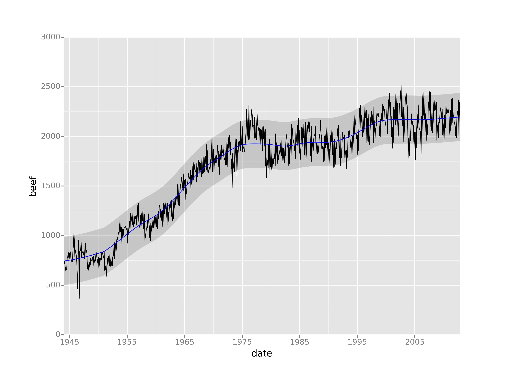

ggplot from ŷhat
ggplot is a plotting system for Python based on R's ggplot2 and the Grammar of Graphics. It is built for
making profressional looking, plots quickly with minimal code.
ggplot is easy to learn
from ggplot import *
ggplot(aes(x='date', y='beef'), data=meat) +\
geom_line() +\
stat_smooth(colour='blue', span=0.2)

ggplot is fun
ggplot(diamonds, aes(x='carat', y='price', color='cut')) +\
geom_point() +\
scale_color_brewer(type='diverging', palette=4) +\
xlab("Carats") + ylab("Price") + ggtitle("Diamonds")

ggplot is powerful
ggplot(diamonds, aes(x='price', fill='cut')) +\
geom_density(alpha=0.25) +\
facet_wrap("clarity")